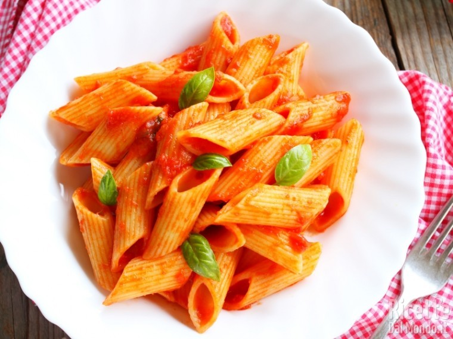

Penne al pomodoro
Ingredienti:
Di seguito gli ingredienti per questo incredibile piatto:
- 300g di spaghetti
- 4 uova
- 100g di pancetta
- 100g di parmiggiano
Preparazione:
- Soffriggere la pancetta a dadini
- Sbattere le uova con parmiggiano e pepe
- Scolare la pasta e saltarla in padella
- Unire la pasta al composto e saltarla qualche minuto
- Servire e gustare!